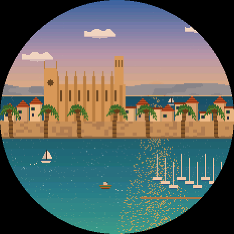

Kleine Welt
Zehn kleine Mallorca-Szenen für die Wand – mit echtem Tageslauf, Booten, Windmühlen und Sonnenuntergang. Für das Waveshare ESP32-S3-Touch-AMOLED-1.75.
Installieren
- Chrome oder Edge am Computer öffnen (Web Serial).
- Board per USB-C anschließen.
- Auf Installieren klicken und den Port wählen.
- Bei „Erase device“ das Kästchen leer lassen → Next → Install.
Firmware wird geladen …
TamaPoke-Spielstand bleibt erhalten
Kleine Welt ersetzt nur das Programm. TamaPokes Spielstand und die Ruhmeshalle liegen in eigenen Speicherbereichen, die Kleine Welt weder liest noch beschreibt – solange „Erase device“ nicht angehakt ist. Ein Haken dort löscht alles unwiderruflich.
Zurück zu TamaPoke: einfach TamaPoke wieder über dessen Installer flashen (ebenfalls ohne „Erase device“). Der alte Stand ist dann wieder da.
Zehn Mallorca-Szenen
Die Cala · Felsbucht · Fischerhafen · Olivenfinca · Bergdorf · Steilküste · Windmühlen · Palma · Strandbar · Felsentor. Alle 10 Minuten blendet die nächste Szene sanft über – das sieht lebendig aus und schont das AMOLED vor Einbrennen.
Antippen (alles freiwillig)
| Waagerecht wischen | nächste bzw. vorige Szene |
| Boot | legt am Steg an, wo es einen gibt (nochmal tippen: legt ab) |
| Meer | ein Fisch springt |
| Himmel | ein Vogel fliegt los |
| Fenster | Licht an/aus (abends) |
| Lange drücken | Uhr stellen: Pfeile tippen (1er-Schritte) oder gedrückt halten (zählt schnell), dann OK |
Jede Szene folgt der echten Uhrzeit: Sonnenauf- und -untergang je nach Monat, goldene Stunde, nachts Mond, Sterne, Fensterlicht und Laternen. Im Februar und März blühen die Mandelbäume. Die Helligkeit wird nachts gedimmt.
Die Uhrzeit kommt aus der eingebauten Uhr des Boards – dieselbe, die TamaPoke benutzt. Stellst du sie hier, gilt sie auch für TamaPoke.